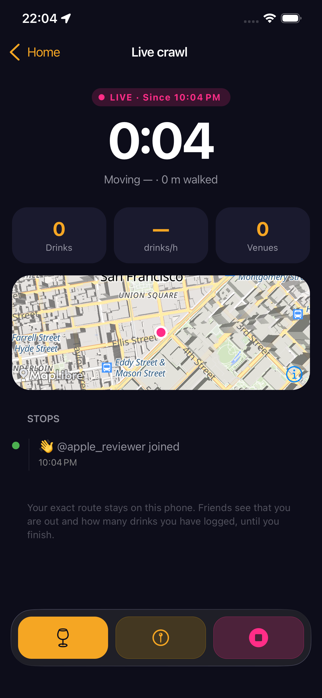
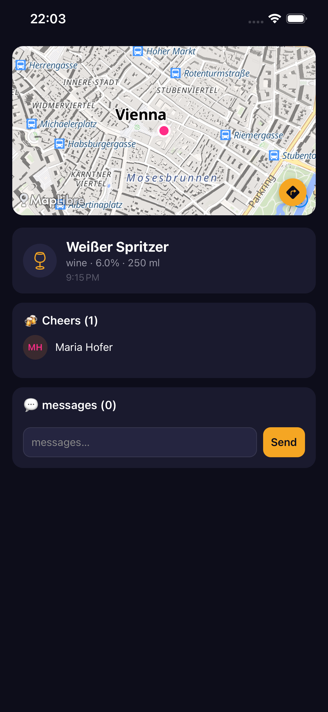
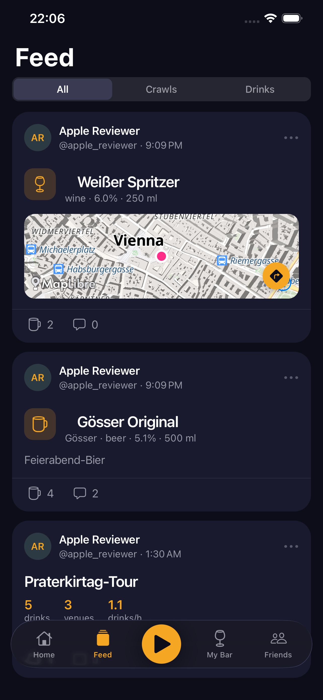

Track the night.
Cheer the friends along the way.
CheersOida logs your bar-crawl route, detects when you arrive at each bar, and lets your friends send a Cheers the moment they see what you're drinking.
How a night goes
Three things happen, in order. The app handles the boring parts.
What's in it
The pieces that make CheersOida more than a check-in app.
A look at the app
Three screens from a real session.



Questions
The honest short answers.
What data does the app collect?
An account (email, username), a time-sampled GPS trace while a crawl is active, check-ins you create, photos you attach, your friend list, and a push-notification token. The full breakdown is on the privacy page.
Can my friends see my route while I'm still crawling?
No. Friends see only the simplified route, which is written once, when you end the crawl. Mid-session, they see "out since 21:30, 3 drinks" and nothing more.
How accurate is the "you arrived" detection?
The app looks for actual dwell at a known venue, not a single GPS fix. Walk past a bar and nothing happens; sit down and the venue is added to your crawl. Two bars ~15 m apart will prompt you to pick one of three instead of guessing.
Does it use background location?
Only while you have a crawl running, with your permission ("While using the app" plus an Android foreground service). The app does not ask for "Allow all the time" and does not track location when there's no active crawl.
Does it work offline / on a basement bar's Wi-Fi?
Yes. GPS, check-ins, and photos are written to the device first, then uploaded through an outbox when the network returns. A crawl through a basement with no signal works the same as one above ground.
Battery cost?
Time-based sampling (one fix per second while active) costs about as much as a navigation app on a similar drive. The crawl ends when you tap Stop, so the cost is bounded to the night itself.
Can I delete my data?
Yes. The in-app account settings delete the account, all check-ins, all friendships, the raw GPS trace, and the simplified route. Deletion is final and runs immediately.
Get in touch
App bug or feature request? Either channel works.